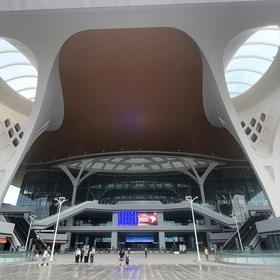
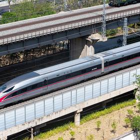
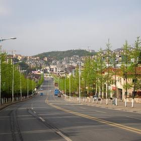
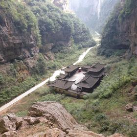
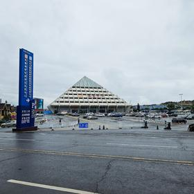

06:30🏨 อาหารเช้า + แยกกระเป๋า45 น.
กระเป๋าใหญ่ 7 ใบฝากไว้ที่โรงแรมฉงชิ่ง ขนขึ้นเขาเฉพาะของใช้ 2 คืน เพราะที่พักบนเขาและการเปลี่ยนรถหลายต่อลากกระเป๋าใหญ่ลำบาก
🚶 เดินไปสถานีรถไฟฟ้า·0.4 กม.·7 น.

07:20🚆 Metro สาย 6 ไปสถานี Chongqing East50 น.
รถไฟไปอู่หลงออกจาก Chongqing East 重庆东站 ไม่ใช่ Chongqing North สถานีใหม่เปิดปี 2025 อยู่เขต Nan'an ห่างเจี่ยฟ่างเปย 21 กม. · Metro สาย 6 ¥5–6 · เช็กชื่อสถานีบนตั๋วให้ชัดก่อนออกจากโรงแรม ขบวนรุ่นเก่าบางขบวนยังใช้ Chongqing North
🚇 Metro สาย 6 ไป Chongqing East·21 กม.·50 น.

08:40🚆 รถไฟความเร็วสูง → Wulong South34 น.
สายใหม่ Yuxia 渝厦高铁 34 นาทีถึง ชั้นสองเริ่ม ¥76 · เดิมต้องขับ 190 กม. 3 ชั่วโมง · ตั๋วเปิดขายล่วงหน้า 15 วันพอดี = 14 ธ.ค. ช่วงปีใหม่หมดเร็ว จองวันเปิดขายเลย · จองผ่าน Trip.com ด้วยพาสปอร์ตได้ ไม่ต้องสมัคร 12306 · ถึงสถานีก่อนเวลา 30 นาที
🚄 รถไฟความเร็วสูง Yuxia·~110 กม.·34 น.

09:25🚗 รถขึ้นเมืองเซียนหนี่ว์ซาน50 น.
รถสายเฉพาะจากสถานีขึ้นเขา 14 กิโลเมตร ¥10–16 · เป็นถนนภูเขาไต่ขึ้นตลอดเส้น ขึ้นจาก 300 เมตรไปราว 1,200 เมตร
🚐 รถสายเฉพาะขึ้นเขา·14 กม.·50 น.
10:20🏨 ฝากของที่พัก25 น.
เช็กอินยังไม่ได้ตอนนี้ แต่ฝากกระเป๋าไว้ก่อนแล้วออกเที่ยวเลย จะได้เวลาในอุทยานเต็ม
🚐 รถในอุทยานจากศูนย์บริการ·3.1 กม.·15 น.

11:00🏔️ หลุมฟ้า 3 สะพานสวรรค์4 ชม. 30 น.
มรดกโลก South China Karst · สะพานหินธรรมชาติ 3 แห่งเรียงกัน เทียนหลง ชิงหลง เฮยหลง ลิฟต์แก้วริมผาลงไป 80 เมตร แล้วเดินในหุบ 4 กิโลเมตรใต้สะพานหินยักษ์ · มีโรงเตี๊ยมโบราณกลางหุบที่ใช้ถ่ายหนัง Transformers · ตั๋วหน้าหนาว ¥125 รวมรถรับส่งและลิฟต์แล้ว (ฤดูสูง ¥155) · บันไดเยอะ เดินจริงเหนื่อยกว่าที่คิด
📸 จุดถ่ายรูป: ใต้สะพานหินเทียนหลง มองขึ้นไปเห็นช่องฟ้าเป็นรูปโค้ง
🚐 รถในอุทยาน แล้วต่อเข้าเมือง·3.1 + 3 กม.·15 น. + 20 น.

15:45🚗 กลับที่พัก เช็กอิน1 ชม.
รถในอุทยานส่งกลับศูนย์บริการ แล้วต่อเข้าเมืองเซียนหนี่ว์ซาน
🚶 เดินในเมืองเซียนหนี่ว์ซาน·0.5 กม.·9 น.
18:00🍽️ มื้อเย็นในเมืองเซียนหนี่ว์ซาน1 ชม. 30 น.
เมืองเล็กบนเขา ร้านอาหารท้องถิ่นเน้นเนื้อย่างกับหม้อไฟ ราคาถูกกว่าในเมืองมาก